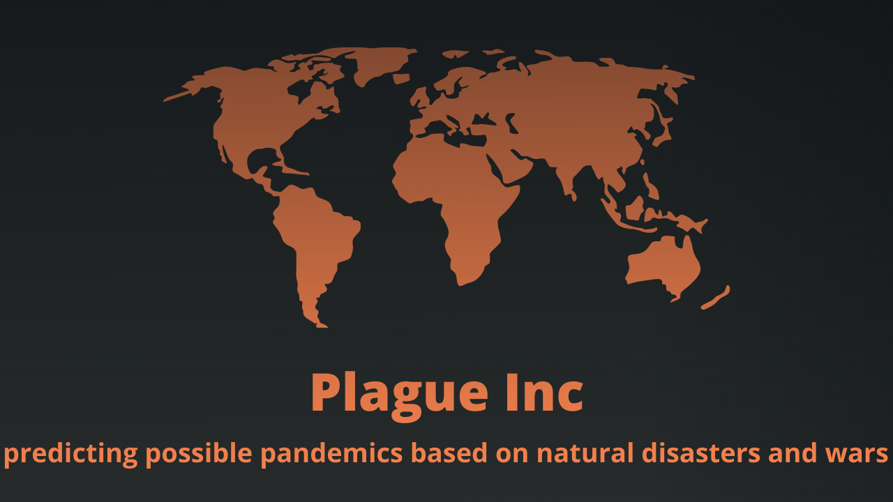

Search for country or year, and see how the latest event affected the world.
There are some errors in your form.
Choose the type of infection:
Zika
Filter for start event by:
Country
Disaster Group
Region
Start Year
End Year
Search for start event based on filter:
Open Menu